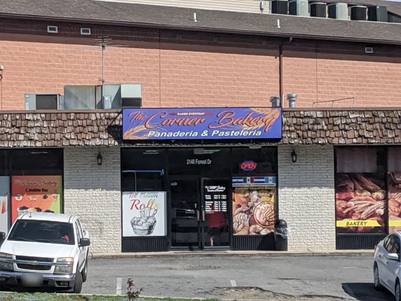
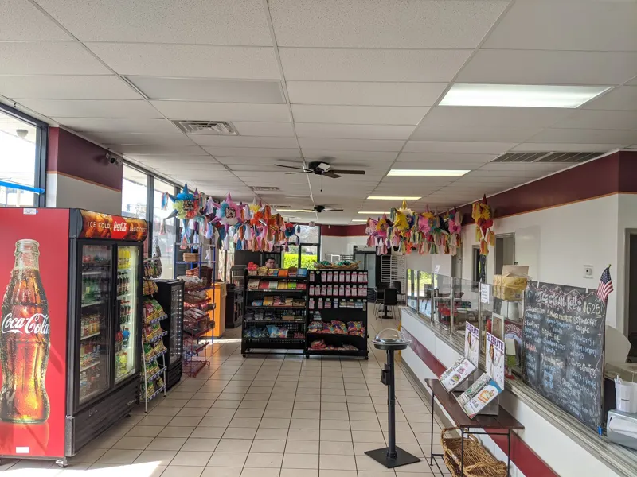

Visítanos on Forest Drive
Find us in the Colonial Parole Center at 2140 Forest Dr, Annapolis. Open seven days, from early morning to evening.

Horario hours
Open daily · 6–7 AM to 8–9 PM| Monday | 7 AM – 9 PM |
| Tuesday | 7 AM – 9 PM |
| Wednesday | 7 AM – 9 PM |
| Thursday | 7 AM – 9 PM |
| Friday | 7 AM – 9 PM |
| Saturday | 6 AM – 9 PM |
| Sunday | 6 AM – 8 PM |
Holiday hours may differ. Thanksgiving (Thu, Nov 26, 2026): the bakery’s Facebook flyer says ¡Abierto toda la noche! — call to confirm.
Contact
(443) 949-0309
bakerygalleria@icloud.com
2140 Forest Dr, Annapolis, MD 21401
Facebook · Google Maps
Good to know


Frequently asked questions
What are your hours?
Monday through Friday 7 AM–9 PM, Saturday 6 AM–9 PM and Sunday 6 AM–8 PM. Holiday hours may differ — call (443) 949-0309 to confirm.
Are you open on Thanksgiving?
The bakery’s Facebook flyer says it will be open all night on Thursday, November 26, 2026 (Thanksgiving). Google notes that hours on Thanksgiving and Black Friday might differ, so please call (443) 949-0309 before you go.
Where are you located?
2140 Forest Dr, Annapolis, MD 21401, inside the Colonial Parole Center. There is a wheelchair-accessible parking lot.
Do you deliver?
No — the bakery offers takeout and on-site dining, but not delivery.
Can I order a custom cake?
Yes. Call (443) 949-0309 or email bakerygalleria@icloud.com with your date, guest count, flavor ideas and a photo or theme. Cakes are picked up at the shop.
What forms of payment do you take?
Credit cards, debit cards and NFC mobile payments (tap to pay).
What do you sell besides bread?
Custom and birthday cakes, tres leches, flan, cakes in a cup, rolled ice cream, juices, breakfast items, birria sandwiches, piñatas and market items.
Is The Corner Bakery Latino-owned?
Yes — the business identifies as Latino-owned on its Google Business Profile.